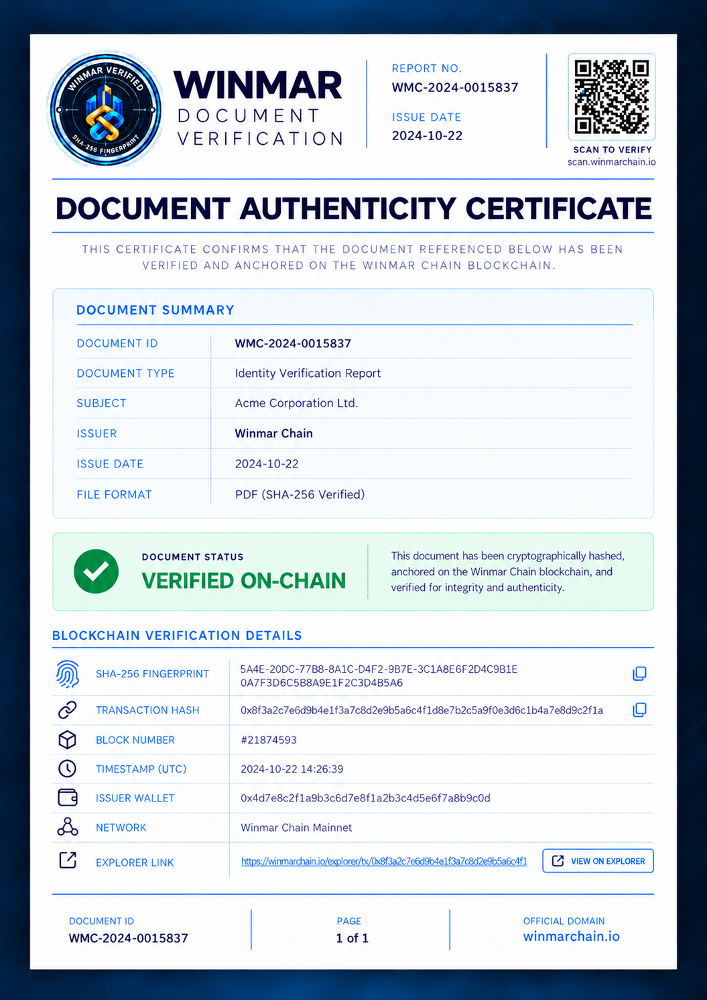

01Verification details DOCUMENT ID / SHA-256Copy ISSUER WALLETCopy REGISTRATION TRANSACTIONCopy BLOCK NUMBERTIMESTAMP (UTC)NETWORKWinmar Chain Mainnet · 12142816 View on Explorer ↗ Compare original PDFYour file never leaves this device. We calculate SHA-256 inside this browser and compare it with the active record.Select original PDF PDF · maximum 10 MBAwaiting original source PDF.
02Certificate previewAn authenticated certificate is available only after the original PDF hash matches the active record.ORIGINAL PDF COMPARISON REQUIREDOpen full certificateDownload PDFPrint